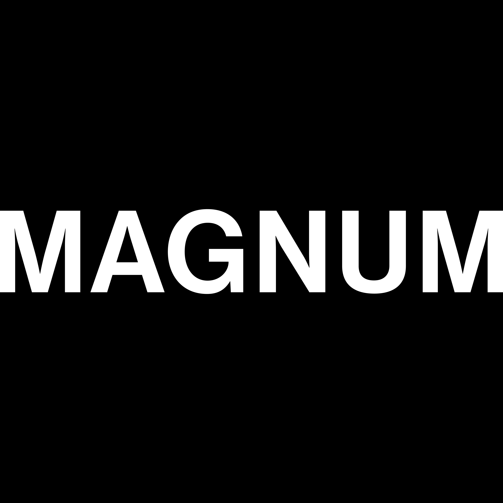
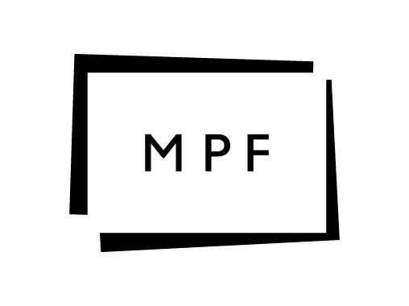
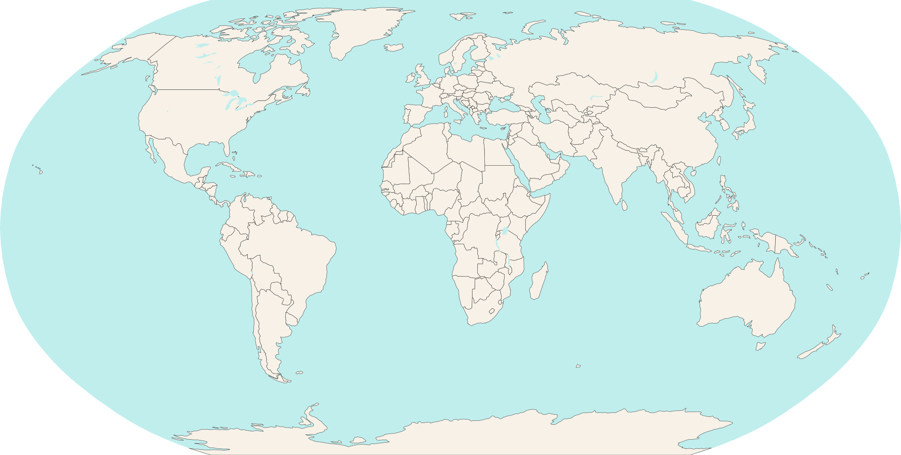

MAPA INTERATIVO
ESCOLHA UM DESTINO
↔ ARRASTE ＋ PINÇA PARA ZOOM

PREPARE O SEU CELULAR
A TV SERÁ O SEU CENÁRIO. A FOTO É FEITA COM A CÂMERA DO SEU PRÓPRIO CELULAR.
ENCERRAMENTO
CONFIRA A FOTO NO SEU CELULAR.